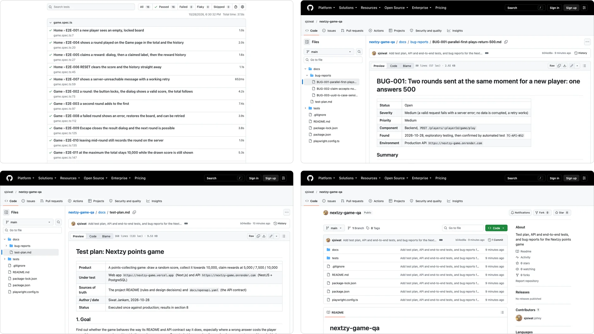
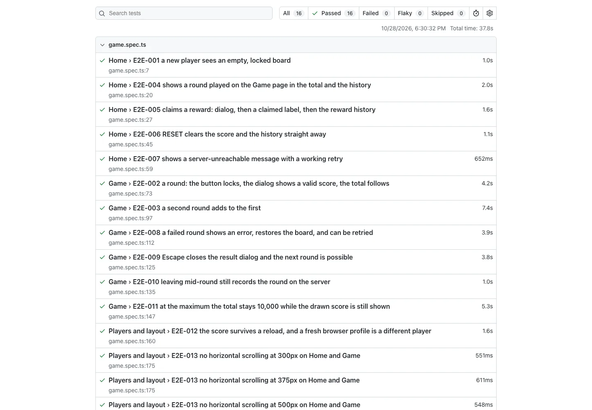
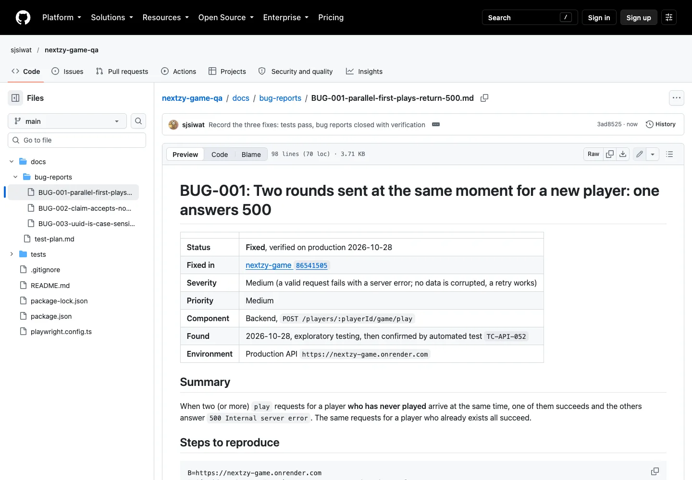
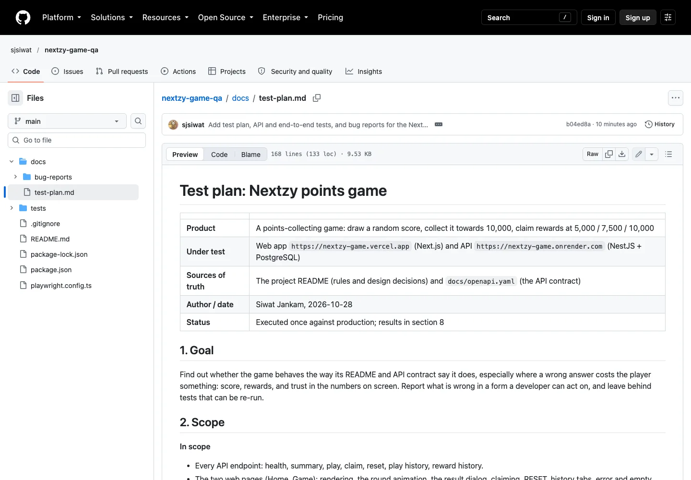

Case Study
Points Game QA — testing my own game
A test plan, 63 API tests and 16 browser tests for the game I built, written as if someone else had built it. What held up, what broke, how it was fixed, and what I couldn't check.

What it's for
I built a small points game as a bootcamp assignment: the server draws a score, the player collects them towards 10,000, and three rewards unlock along the way. It worked when I clicked through it, which is not the same as knowing it works. So I treated my own README and API contract as the specification and went looking for the places where the game disagreed with them.
The aim was a piece of QA work I could show: a plan that says what I'd check and why, tests that can be re-run, and bug reports a developer could act on.
What it had to work around
- Production only. There is no staging copy, so every test runs against the live game and its real database.
- A free-plan API that sleeps. The first request after a quiet spell can take 30 to 60 seconds, so timeouts are generous and load testing was off the table.
- No login. A player is just a UUID, so tests must make their own players and leave nothing behind.
- The spec is a README and an OpenAPI file. Anything they don't say can only be found by poking at it.
Four calls, and what they cost
Test against the written contract, not my memory of the code
I wrote the code, so I'm the worst person to trust about it. The test plan maps every rule in the README and OpenAPI file to the cases that check it, so a gap shows up as an empty row, not a feeling.
Trade-offWhatever the documents don't mention goes untested by design, which is why I added exploratory probing on top.
API tests first, browser tests second
The server owns the rules (the draw, the 10,000 cap, claim-once), so most of the weight sits there: 63 fast tests with no dependencies. The 16 browser tests cover the flows, and they check the screen against what the server says it drew.
Trade-offBrowser tests are slower (the round animation alone is several seconds) and depend on the live deployment being up.
Every test plays as its own throwaway player
A fresh UUID per test, state prepared through the API ("play until 5,000"), and a reset at the end. Tests can't interfere with each other and nothing is left in the database.
Trade-offThe tests rely on the reset endpoint working. If it broke, they would leave data behind.
Open bugs stay in the suite, marked todo
A test for a defect that isn't fixed yet still runs and still fails, which is the evidence, but it doesn't turn the suite red. When the bug is fixed the test passes and the marker comes off.
Trade-offIt only works if someone reads the todo count. I wrote "nine todos for three bugs" in the README; when the fixes landed all nine flipped to passing and the markers came off.
Three defects, and one of my own
Send two rounds at the same moment for a player who has never played, and one answers 500. For a player who already exists, the same requests always succeed. My first run, 25 rounds at once, passed. Repeating it and trying two at a time is what exposed the problem: 30 of 30 trials failed with two parallel rounds on a new player, against 0 of 60 for an existing one. No points were lost or doubled; the failed round simply never happened.
Measured it instead of describing it, then wrote the bug report: steps to
reproduce, expected and actual, the table of how often, who can actually hit it
(the web app locks the button during a round, so mostly API clients or two tabs),
and a suggested fix. My hypothesis was a race when two transactions both try to
create the player, hidden behind a generic 500. Production gave me no logs, so
the report said it was a hypothesis, until I reproduced it against a local copy
of the original code and read the line it logged:
Unique constraint failed on the constraint: Player_pkey.
The claim endpoint treats 5e3, 0x1388 and
+5000 as checkpoint 5000, although the contract says integer. And the
same UUID in upper case is a different player. Both low severity. I checked what
the first one could cost: a second claim through any spelling was still refused
with 409, so claim-once held.
The player was created with an upsert, which checks and then inserts, so two
simultaneous first rounds both tried to insert. It became one
INSERT … ON CONFLICT DO NOTHING. The claim endpoint now converts
the checkpoint only when it is exactly 5000, 7500 or
10000, and the player id is lower-cased. The two input fixes came with
unit tests that fail on the old code; the race is covered by the API test. Re-running everything against the redeployed
production, the trial that failed 30 of 30 times now fails
0 of 30, and a burst of 25 went from 28 failed requests in 100 to
none. One of my own tests had asserted the old behaviour (a 409 for
5e3); it now asserts the correct 400, because the product changed.
Two of my first browser tests failed. The game wasn't wrong: the framework adds its own hidden alert element, so my locator matched two elements. I fixed the test and kept the note in the plan. A failing test is a question, not a verdict.
Where it landed
79 automated tests, all passing: 63 API and 16 browser. The rules that mattered most held from the first run. A reward can't be claimed twice, even by ten simultaneous requests. Parallel rounds for an existing player never lost a point. The cap, reset and 100-row history limit all behave as documented, and the screen agrees with the server. The three defects it found were then fixed in the game and re-verified on production.
Public repository · 3 defects found, fixed and verified on production



What I'd do differently
- Run the suite against a local copy from the start, not only after a failure. I read the server log and confirmed the cause of the 500 only once production had already shown me the symptom.
- Put the API tests on a schedule in CI, with a warm-up request first so the cold start doesn't look like a failure.
- Cover Safari and Firefox. Everything ran in Chrome, so the
<dialog>behaviour and layout elsewhere are untested. - Add a light load check on a local instance. I left it out of production on purpose, which also means it isn't covered at all.